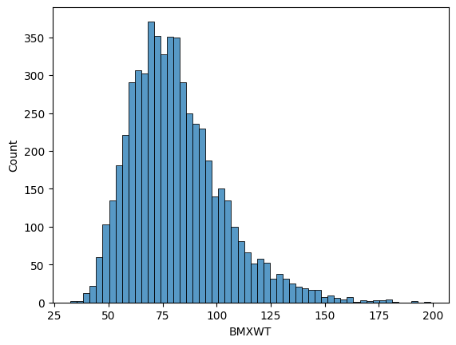
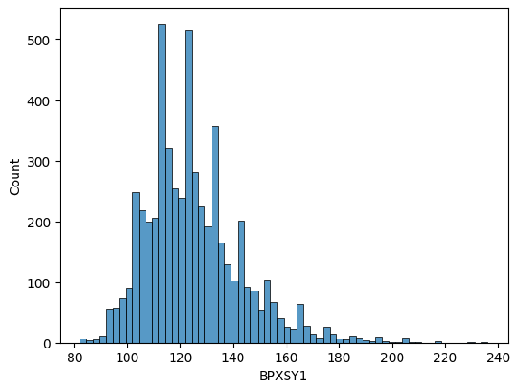
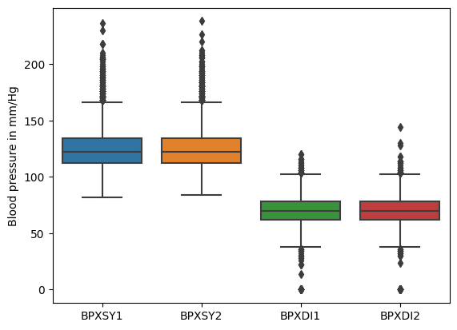
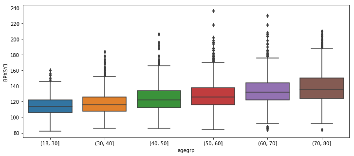
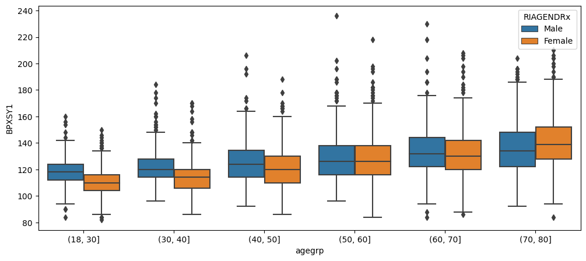
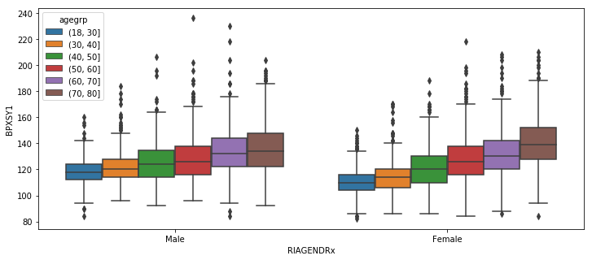

%matplotlib inline
import matplotlib.pyplot as plt
import seaborn as sns
import pandas as pd
import numpy as np10 Univariate data analyses - NHANES case study
Here we will demonstrate how to use Python and Pandas to perform some basic analyses with univariate data, using the 2015-2016 wave of the NHANES study to illustrate the techniques.
The following import statements make the libraries that we will need available. Note that in a Jupyter notebook, you should generally use the %matplotlib inline directive, which would not be used when running a script outside of the Jupyter environment.
Next we will load the NHANES data from a file.
da = pd.read_csv("../data/nhanes_2015_2016.csv")
da.head()| SEQN | ALQ101 | ALQ110 | ALQ130 | SMQ020 | RIAGENDR | RIDAGEYR | RIDRETH1 | DMDCITZN | DMDEDUC2 | ... | BPXSY2 | BPXDI2 | BMXWT | BMXHT | BMXBMI | BMXLEG | BMXARML | BMXARMC | BMXWAIST | HIQ210 | |
|---|---|---|---|---|---|---|---|---|---|---|---|---|---|---|---|---|---|---|---|---|---|
| 0 | 83732 | 1.0 | NaN | 1.0 | 1 | 1 | 62 | 3 | 1.0 | 5.0 | ... | 124.0 | 64.0 | 94.8 | 184.5 | 27.8 | 43.3 | 43.6 | 35.9 | 101.1 | 2.0 |
| 1 | 83733 | 1.0 | NaN | 6.0 | 1 | 1 | 53 | 3 | 2.0 | 3.0 | ... | 140.0 | 88.0 | 90.4 | 171.4 | 30.8 | 38.0 | 40.0 | 33.2 | 107.9 | NaN |
| 2 | 83734 | 1.0 | NaN | NaN | 1 | 1 | 78 | 3 | 1.0 | 3.0 | ... | 132.0 | 44.0 | 83.4 | 170.1 | 28.8 | 35.6 | 37.0 | 31.0 | 116.5 | 2.0 |
| 3 | 83735 | 2.0 | 1.0 | 1.0 | 2 | 2 | 56 | 3 | 1.0 | 5.0 | ... | 134.0 | 68.0 | 109.8 | 160.9 | 42.4 | 38.5 | 37.7 | 38.3 | 110.1 | 2.0 |
| 4 | 83736 | 2.0 | 1.0 | 1.0 | 2 | 2 | 42 | 4 | 1.0 | 4.0 | ... | 114.0 | 54.0 | 55.2 | 164.9 | 20.3 | 37.4 | 36.0 | 27.2 | 80.4 | 2.0 |
5 rows × 28 columns
10.0.1 Frequency tables
The value_counts method can be used to determine the number of times that each distinct value of a variable occurs in a data set. In statistical terms, this is the “frequency distribution” of the variable. Below we show the frequency distribution of the DMDEDUC2 variable, which is a variable that reflects a person’s level of educational attainment. The value_counts method produces a table with two columns. The first column contains all distinct observed values for the variable. The second column contains the number of times each of these values occurs. Note that the table returned by value_counts is actually a Pandas data frame, so can be further processed using any Pandas methods for working with data frames.
The numbers 1, 2, 3, 4, 5, 9 seen below are integer codes for the 6 possible non-missing values of the DMDEDUC2 variable. The meaning of these codes is given in the NHANES codebook located here, and will be discussed further below. This table shows, for example, that 1621 people in the data file have DMDEDUC=4, which indicates that the person has completed some college, but has not graduated with a four-year degree.
da.DMDEDUC2.value_counts()4.0 1621
5.0 1366
3.0 1186
1.0 655
2.0 643
9.0 3
Name: DMDEDUC2, dtype: int64Note that the value_counts method excludes missing values. We confirm this below by adding up the number of observations with a DMDEDUC2 value equal to 1, 2, 3, 4, 5, or 9 (there are 5474 such rows), and comparing this to the total number of rows in the data set, which is 5735. This tells us that there are 5735 - 5474 = 261 missing values for this variable (other variables may have different numbers of missing values).
print(da.DMDEDUC2.value_counts().sum())
print(1621 + 1366 + 1186 + 655 + 643 + 3) # Manually sum the frequencies
print(da.shape)5474
5474
(5735, 28)Another way to obtain this result is to locate all the null (missing) values in the data set using the isnull Pandas function, and count the number of such locations.
pd.isnull(da.DMDEDUC2).sum()26110.0.1.1 Replace naming in a column
In some cases it is useful to replace integer codes with a text label that reflects the code’s meaning. Below we create a new variable called ‘DMDEDUC2x’ that is recoded with text labels, then we generate its frequency distribution.
da["DMDEDUC2x"] = da.DMDEDUC2.replace({1: "<9", 2: "9-11", 3: "HS/GED", 4: "Some college/AA", 5: "College",
7: "Refused", 9: "Don't know"})
da.DMDEDUC2x.value_counts()Some college/AA 1621
College 1366
HS/GED 1186
<9 655
9-11 643
Don't know 3
Name: DMDEDUC2x, dtype: int64We will also want to have a relabeled version of the gender variable, so we will construct that now as well. We will follow a convention here of appending an ‘x’ to the end of a categorical variable’s name when it has been recoded from numeric to string (text) values.
da["RIAGENDRx"] = da.RIAGENDR.replace({1: "Male", 2: "Female"})
da["RIAGENDRx"].value_counts()Female 2976
Male 2759
Name: RIAGENDRx, dtype: int64For many purposes it is more relevant to consider the proportion of the sample with each of the possible category values, rather than the number of people in each category. We can do this as follows:
x = da.DMDEDUC2x.value_counts() # x is just a name to hold this value temporarily
x / x.sum() * 100Some college/AA 29.612715
College 24.954330
HS/GED 21.666058
<9 11.965656
9-11 11.746438
Don't know 0.054805
Name: DMDEDUC2x, dtype: float6410.0.1.2 Replace NAs with another category
In some cases we will want to treat the missing response category as another category of observed response, rather than ignoring it when creating summaries. Below we create a new category called “Missing”, and assign all missing values to it usig fillna. Then we recalculate the frequency distribution. We see that 4.6% of the responses are missing.
da["DMDEDUC2x"] = da.DMDEDUC2x.fillna("Missing")
x = da.DMDEDUC2x.value_counts()
x / x.sum() * 100Some college/AA 28.265039
College 23.818657
HS/GED 20.680035
<9 11.421099
9-11 11.211857
Missing 4.551003
Don't know 0.052310
Name: DMDEDUC2x, dtype: float6410.0.2 Numerical summaries
A quick way to get a set of numerical summaries for a quantitative variable is with the describe data frame method. Below we demonstrate how to do this using the body weight variable (BMXWT). As with many surveys, some data values are missing, so we explicitly drop the missing cases using the dropna method before generating the summaries.
da.BMXWT.dropna().describe()count 5666.000000
mean 81.342676
std 21.764409
min 32.400000
25% 65.900000
50% 78.200000
75% 92.700000
max 198.900000
Name: BMXWT, dtype: float64It’s also possible to calculate individual summary statistics from one column of a data set. This can be done using Pandas methods, or with numpy functions:
x = da.BMXWT.dropna() # Extract all non-missing values of BMXWT into a variable called 'x'
print(x.mean()) # Pandas method
print(np.mean(x)) # Numpy function
print(x.median())
print(np.percentile(x, 50)) # 50th percentile, same as the median
print(np.percentile(x, 75)) # 75th percentile
print(x.quantile(0.75)) # Pandas method for quantiles, equivalent to 75th percentile81.34267560889516
81.34267560889516
78.2
78.2
92.7
92.7Next we look at frequencies for a systolic blood pressure measurement (BPXSY1). “BPX” here is the NHANES prefix for blood pressure measurements, “SY” stands for “systolic” blood pressure (blood pressure at the peak of a heartbeat cycle), and “1” indicates that this is the first of three systolic blood presure measurements taken on a subject.
A person is generally considered to have pre-hypertension when their systolic blood pressure is between 120 and 139, or their diastolic blood pressure is between 80 and 89. Considering only the systolic condition, we can calculate the proprotion of the NHANES sample who would be considered to have pre-hypertension.
np.mean((da.BPXSY1 >= 120) & (da.BPXSY2 <= 139)) # "&" means "and"0.3741935483870968Next we calculate the propotion of NHANES subjects who are pre-hypertensive based on diastolic blood pressure.
np.mean((da.BPXDI1 >= 80) & (da.BPXDI2 <= 89))0.14803836094158676Finally we calculate the proportion of NHANES subjects who are pre-hypertensive based on either systolic or diastolic blood pressure. Since some people are pre-hypertensive under both criteria, the proportion below is less than the sum of the two proportions calculated above.
Since the combined systolic and diastolic condition for pre-hypertension is somewhat complex, below we construct temporary variables ‘a’ and ‘b’ that hold the systolic and diastolic pre-hypertensive status separately, then combine them with a “logical or” to obtain the final status for each subject.
a = (da.BPXSY1 >= 120) & (da.BPXSY2 <= 139)
b = (da.BPXDI1 >= 80) & (da.BPXDI2 <= 89)
print(np.mean(a | b)) # "|" means "or"0.43975588491717527Blood pressure measurements are affected by a phenomenon called “white coat anxiety”, in which a subject’s bood pressure may be slightly elevated if they are nervous when interacting with health care providers. Typically this effect subsides if the blood pressure is measured several times in sequence. In NHANES, both systolic and diastolic blood pressure are meausred three times for each subject (e.g. BPXSY2 is the second measurement of systolic blood pressure). We can calculate the extent to which white coat anxiety is present in the NHANES data by looking a the mean difference between the first two systolic or diastolic blood pressure measurements.
print(np.mean(da.BPXSY1 - da.BPXSY2))
print(np.mean(da.BPXDI1 - da.BPXDI2))0.6749860309182343
0.349040789718755810.0.3 Graphical summaries
Quantitative variables can be effectively summarized graphically. Below we see the distribution of body weight (in Kg), shown as a histogram. It is evidently right-skewed.
sns.histplot(da.BMXWT.dropna())<AxesSubplot:xlabel='BMXWT', ylabel='Count'>
Next we look at the histogram of systolic blood pressure measurements. You can see that there is a tendency for the measurements to be rounded to the nearest 5 or 10 units.
sns.histplot(da.BPXSY1.dropna())<AxesSubplot:xlabel='BPXSY1', ylabel='Count'>
To compare several distributions, we can use side-by-side boxplots. Below we compare the distributions of the first and second systolic blood pressure measurements (BPXSY1, BPXSY2), and the first and second diastolic blood pressure measurements (BPXDI1, BPXDI2). As expected, diastolic measurements are substantially lower than systolic measurements. Above we saw that the second blood pressure reading on a subject tended on average to be slightly lower than the first measurement. This difference was less than 1 mm/Hg, so is not visible in the “marginal” distributions shown below.
bp = sns.boxplot(data=da[["BPXSY1", "BPXSY2", "BPXDI1", "BPXDI2"]])
_ = bp.set_ylabel("Blood pressure in mm/Hg")
10.0.4 Stratification
One of the most effective ways to get more information out of a dataset is to divide it into smaller, more uniform subsets, and analyze each of these “strata” on its own. We can then formally or informally compare the findings in the different strata. When working with human subjects, it is very common to stratify on demographic factors such as age, sex, and race.
To illustrate this technique, consider blood pressure, which is a value that tends to increase with age. To see this trend in the NHANES data, we can partition the data into age strata, and construct side-by-side boxplots of the systolic blood pressure (SBP) distribution within each stratum. Since age is a quantitative variable, we need to create a series of “bins” of similar SBP values in order to stratify the data. Each box in the figure below is a summary of univariate data within a specific population stratum (here defined by age).
da.RIDAGEYR.value_counts()80 343
18 133
19 128
60 119
61 112
...
74 52
78 47
76 44
77 43
79 35
Name: RIDAGEYR, Length: 63, dtype: int64da["agegrp"] = pd.cut(da.RIDAGEYR, [18, 30, 40, 50, 60, 70, 80]) # Create age strata based on these cut points
plt.figure(figsize=(12, 5)) # Make the figure wider than default (12cm wide by 5cm tall)
sns.boxplot(x="agegrp", y="BPXSY1", data=da) # Make boxplot of BPXSY1 stratified by age group<matplotlib.axes._subplots.AxesSubplot at 0x7f8388799ef0>
Taking this a step further, it is also the case that blood pressure tends to differ between women and men. While we could simply make two side-by-side boxplots to illustrate this contrast, it would be a bit odd to ignore age after already having established that it is strongly associated with blood pressure. Therefore, we will doubly stratify the data by gender and age.
We see from the figure below that within each gender, older people tend to have higher blood pressure than younger people. However within an age band, the relationship between gender and systolic blood pressure is somewhat complex – in younger people, men have substantially higher blood pressures than women of the same age. However for people older than 50, this relationship becomes much weaker, and among people older than 70 it appears to reverse. It is also notable that the variation of these distributions, reflected in the height of each box in the boxplot, increases with age.
da["agegrp"] = pd.cut(da.RIDAGEYR, [18, 30, 40, 50, 60, 70, 80])
plt.figure(figsize=(12, 5))
sns.boxplot(x="agegrp", y="BPXSY1", hue="RIAGENDRx", data = da)<AxesSubplot:xlabel='agegrp', ylabel='BPXSY1'>
When stratifying on two factors (here age and gender), we can group the boxes first by age, and within age bands by gender, as above, or we can do the opposite – group first by gender, and then within gender group by age bands. Each approach highlights a different aspect of the data.
da["agegrp"] = pd.cut(da.RIDAGEYR, [18, 30, 40, 50, 60, 70, 80])
plt.figure(figsize=(12, 5))
sns.boxplot(x="RIAGENDRx", y="BPXSY1", hue="agegrp", data=da)<matplotlib.axes._subplots.AxesSubplot at 0x7f838880ed68>
Stratification can also be useful when working with categorical variables. Below we look at the frequency distribution of educational attainment (“DMDEDUC2”) within 10-year age bands. While “some college” is the most common response in all age bands, up to around age 60 the second most common response is “college” (i.e. the person graduated from college with a four-year degree). However for people over 50, there are as many or more people with only high school or general equivalency diplomas (HS/GED) than there are college graduates.
Note on causality and confounding: An important role of statistics is to aid researchers in identifying causes underlying observed differences. Here we have seen differences in both blood pressure and educational attainment based on age. It is plausible that aging directly causes blood pressure to increase. But in the case of educational attainment, this is actually a “birth cohort effect”. NHANES is a cross sectional survey (all data for one wave were collected at a single point in time). People who were, say, 65 in 2015 (when these data were collected), were college-aged around 1970, while people who were in their 20’s in 2015 were college-aged in around 2010 or later. Over the last few decades, it has become much more common for people to at least begin a college degree than it was in the past. Therefore, younger people as a group have higher educational attainment than older people as a group. As these young people grow older, the cross sectional relationship between age and educational attainment will change.
da.groupby("agegrp")["DMDEDUC2x"].value_counts()agegrp DMDEDUC2x
(18, 30] Some college/AA 364
College 278
HS/GED 237
Missing 128
9-11 99
<9 47
(30, 40] Some college/AA 282
College 264
HS/GED 182
9-11 111
<9 93
(40, 50] Some college/AA 262
College 260
HS/GED 171
9-11 112
<9 98
(50, 60] Some college/AA 258
College 220
HS/GED 220
9-11 122
<9 104
(60, 70] Some college/AA 238
HS/GED 192
College 188
<9 149
9-11 111
(70, 80] Some college/AA 217
HS/GED 184
<9 164
College 156
9-11 88
Don't know 3
Name: DMDEDUC2x, dtype: int64We can also stratify jointly by age and gender to explore how educational attainment varies by both of these factors simultaneously. In doing this, it is easier to interpret the results if we pivot the education levels into the columns, and normalize the counts so that they sum to 1. After doing this, the results can be interpreted as proportions or probabilities. One notable observation from this table is that for people up to age around 60, women are more likely to have graduated from college than men, but for people over aged 60, this relationship reverses.
# Eliminate rare/missing values
dx = da.loc[~da.DMDEDUC2x.isin(["Don't know", "Missing"]), :]
#group data
dx = dx.groupby(["agegrp", "RIAGENDRx"])["DMDEDUC2x"]
dx = dx.value_counts()
dx.head()agegrp RIAGENDRx DMDEDUC2x
(18, 30] Female Some college/AA 207
College 156
HS/GED 119
9-11 44
<9 27
Name: DMDEDUC2x, dtype: int64dx = dx.unstack() # Restructure the results from 'long' to 'wide'
dx.head()| DMDEDUC2x | 9-11 | <9 | College | HS/GED | Some college/AA | |
|---|---|---|---|---|---|---|
| agegrp | RIAGENDRx | |||||
| (18, 30] | Female | 44 | 27 | 156 | 119 | 207 |
| Male | 55 | 20 | 122 | 118 | 157 | |
| (30, 40] | Female | 42 | 46 | 149 | 78 | 159 |
| Male | 69 | 47 | 115 | 104 | 123 | |
| (40, 50] | Female | 55 | 53 | 150 | 87 | 157 |
# Normalize within each stratum to get proportions
dx = dx.apply(lambda x: x/x.sum(), axis=1)
dx.head()| DMDEDUC2x | 9-11 | <9 | College | HS/GED | Some college/AA | |
|---|---|---|---|---|---|---|
| agegrp | RIAGENDRx | |||||
| (18, 30] | Female | 0.079566 | 0.048825 | 0.282098 | 0.215190 | 0.374322 |
| Male | 0.116525 | 0.042373 | 0.258475 | 0.250000 | 0.332627 | |
| (30, 40] | Female | 0.088608 | 0.097046 | 0.314346 | 0.164557 | 0.335443 |
| Male | 0.150655 | 0.102620 | 0.251092 | 0.227074 | 0.268559 | |
| (40, 50] | Female | 0.109562 | 0.105578 | 0.298805 | 0.173307 | 0.312749 |
print(dx.to_string(float_format="%.3f")) # Limit display to 3 decimal placesDMDEDUC2x 9-11 <9 College HS/GED Some college/AA
agegrp RIAGENDRx
(18, 30] Female 0.080 0.049 0.282 0.215 0.374
Male 0.117 0.042 0.258 0.250 0.333
(30, 40] Female 0.089 0.097 0.314 0.165 0.335
Male 0.151 0.103 0.251 0.227 0.269
(40, 50] Female 0.110 0.106 0.299 0.173 0.313
Male 0.142 0.112 0.274 0.209 0.262
(50, 60] Female 0.117 0.102 0.245 0.234 0.302
Male 0.148 0.123 0.231 0.242 0.256
(60, 70] Female 0.118 0.188 0.195 0.206 0.293
Male 0.135 0.151 0.233 0.231 0.249
(70, 80] Female 0.105 0.225 0.149 0.240 0.281
Male 0.113 0.180 0.237 0.215 0.255